Опять же, небольшая программка на 15-20 строк по заданному алгоритму. На этот раз алгоритм подразумевает правильную обработку строк.
Пример 1)
Начнем с тупейшего и простейшего прототипа этого задания.
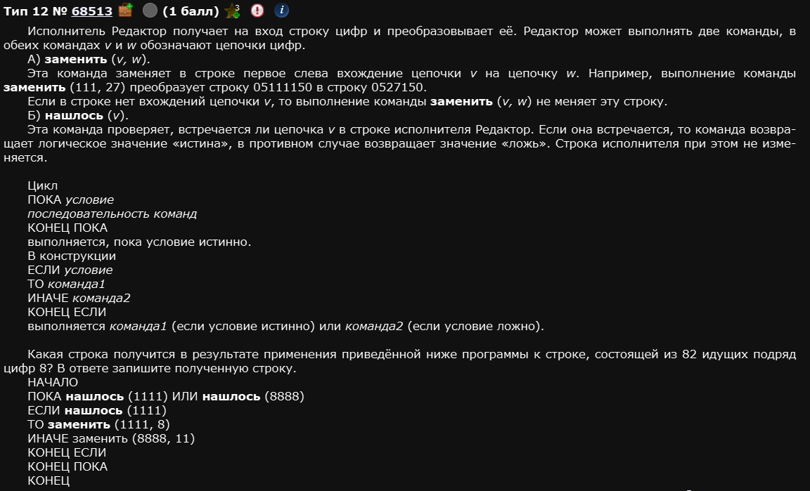
Собсна у нас почти все есть, нам надо только реализовать это все, от себя выдумывать ничего не нужно. Определим строку:
s = '8' * 82Заебись, определили. Далее нужно переписать тот алгоритм, который задан в условии на язык питона. Все слова стоит понимать буквально - ПОКА отвечает while, ИЛИ - or, ЕСЛИ - if, ЗАМЕНИТЬ - метод replace, ИНАЧЕ - else. НАЧАЛО и КОНЕЦ при этом можно не писать, слава питону, высокоуровневому языку.
s = '8' * 82
while ('1111' in s) or ('8888' in s):
if '1111' in s:
s = s.replace('1111', '8', 1)
else:
s = s.replace('8888', '11', 1)
print(s)Ну и собсна все. По итогу работы программка выдает 118.
Ответ: 118.
Посмотрим на похожее задание:
Пример 2)
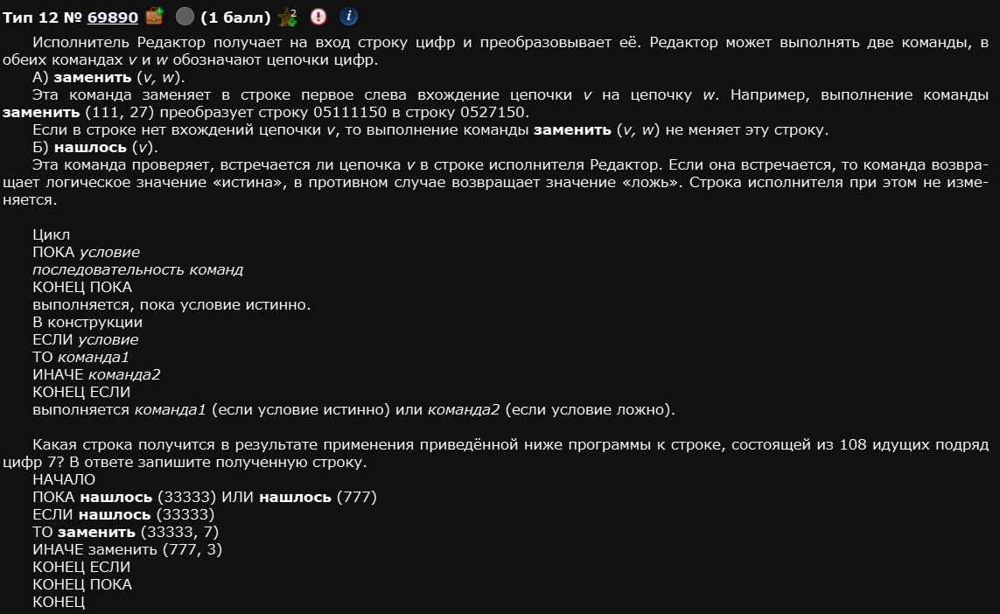
Собсна, полная аналогия, циферки другие
a = '7' * 108
while '33333' in a or '777' in a:
if '33333' in a:
a = a.replace('33333','7',1)
else:
a = a.replace('777','3',1)
print(a)Ответ: 3337
Это все круто, но таких прототипов маловато. Если такое попалось на экзамене - считайте повезло. Давайте посмотрим на более сложные и более распространенные.
Пример 3)
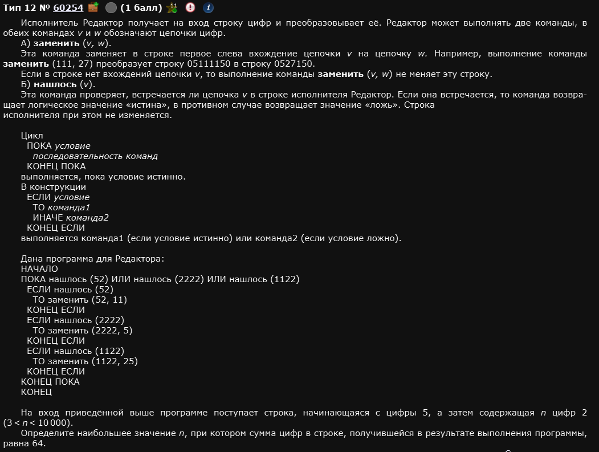
Итак, начнем с простого. Перепишем алгоритм, который дан для редактора с алгоритмического языка на пайтон:
while '52' in a or '2222' in a or '1122' in a:
if '52' in a:
a = a.replace('52', '11', 1)
if '2222' in a:
a = a.replace('2222', '5', 1)
if '1122' in a:
a = a.replace('1122', '25', 1)Над ним мы будем шаманить.
Во-первых, у нас известно как выглядит строка (у меня обозначена a): это цифра 5 вначале и n штук двоек после. Сама постановка условия намекает, что нужен цикл. Давайте добавим:
for n in range(4, 10000):
a = '5' + '2' * n
while '52' in a or '2222' in a or '1122' in a:
if '52' in a:
a = a.replace('52', '11', 1)
if '2222' in a:
a = a.replace('2222', '5', 1)
if '1122' in a:
a = a.replace('1122', '25', 1)Число итераций выбрано согласно условию. Судя по условию, нам нужны только те n-ки (ну типа их реально несколько может быть), у которых сумма цифр после прокрутки равна 64. Давайте прям в цикл добавим это условие:
for n in range(4, 10000):
a = '5' + '2' * n
while '52' in a or '2222' in a or '1122' in a:
if '52' in a:
a = a.replace('52', '11', 1)
if '2222' in a:
a = a.replace('2222', '5', 1)
if '1122' in a:
a = a.replace('1122', '25', 1)
if sum_of_digits(a) == 64:
print(n)Я тут заранее написал пока что не обозначенную функцию проверки на сумму цифр sum_of_digits(a). Давайте ее тоже напишем. Напомню, что а - это строка, а нам надо сумму именно цифр. Т.е. в функции должно быть преобразование каждого отдельного символа в циферку:
def sum_of_digits(a):
s = 0
for x in a:
s += int(x)
return sВс0
def sum_of_digits(a):
s = 0
for x in a:
s += int(x)
return s
for n in range(4, 10000):
a = '5' + '2' * n
while '52' in a or '2222' in a or '1122' in a:
if '52' in a:
a = a.replace('52', '11', 1)
if '2222' in a:
a = a.replace('2222', '5', 1)
if '1122' in a:
a = a.replace('1122', '25', 1)
if sum_of_digits(a) == 64:
print(n)По итогу работы программка выдает 3 числа: 152, 154 и 156. Судя по условию, надо наибольшее.
Ответ: 156.
Пример 4)
Посмотрим на похожий пример, условие отличается только лишь циферками, идея та же.
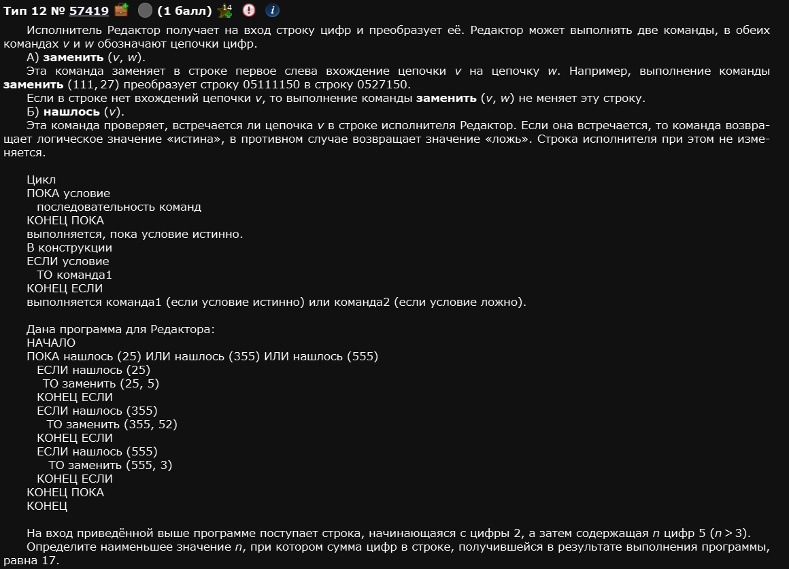
Все +- также, просто циферки другие. Последовательно пишем сначала алгоритм преобразования, определяем строку, засовываем все это в цикл, пишем условие, при котором у нас будет выводиться n, пишем функцию счета циферок:
def sum_of_digits(a):
r = 0
for x in a:
r += int(x)
return r
for n in range (3,1000):
a = '2' + '5'*n
while '25' in a or '355' in a or '555' in a:
if '25' in a:
a = a.replace('25','5',1)
if '355' in a:
a = a.replace('355','52',1)
if '555' in a:
a = a.replace('555','3',1)
if sum_of_digits(a) == 17:
print(n)Мой код, откровенно, халтурный. Процесс поиска минимального n можно оптимизировать, но я этого делать не стал, программа выводит все n, для которых f(n) = 17. Однако, в таком случае, стоит посмотреть на начало этого списка и взять первое значение в качестве ответа.
Ответ: 29
Приведу другой пример кода, который работает получше и сам покороче:
for n in range(4,100):
s = '2' + '5'*n
while '25' in s or '355' in s or '555' in s:
s = s.replace('25','5',1)
s = s.replace('355','52',1)
s = s.replace('555','3',1)
if sum(map(int,s)) == 17:
print(n)
breakЭтот код использует вот такую вот конструкцию:
sum(map(int,s))Функция map применяет какую-то конкретную функцию (первый аргумент) ко всем последующим аргументам (переменные). Т.е. мы функцией map применили int (преобразование в число) к строке s. Причем функция map возвращает именно список, т.е. если изначально была строка ‘235’, то после всего этого действа станет
Ля прикол:
def myfunc(a, b):
return a + b
x = map(myfunc, ('apple', 'banana', 'cherry'), ('orange', 'lemon', 'pineapple'))
print(x)
#convert the map into a list, for readability:
print(list(x))Вот эта штучка вернет следующее:
Ну а раз есть список, то функция sum просто сумму находит, без хитростей. По итогу получим нужное условие.
Как-то так,,,
Ладно, хиханьки с хаханьками закончились,,, Давайте посмотрим на неприятный прототип этого задания.
Пример 5)
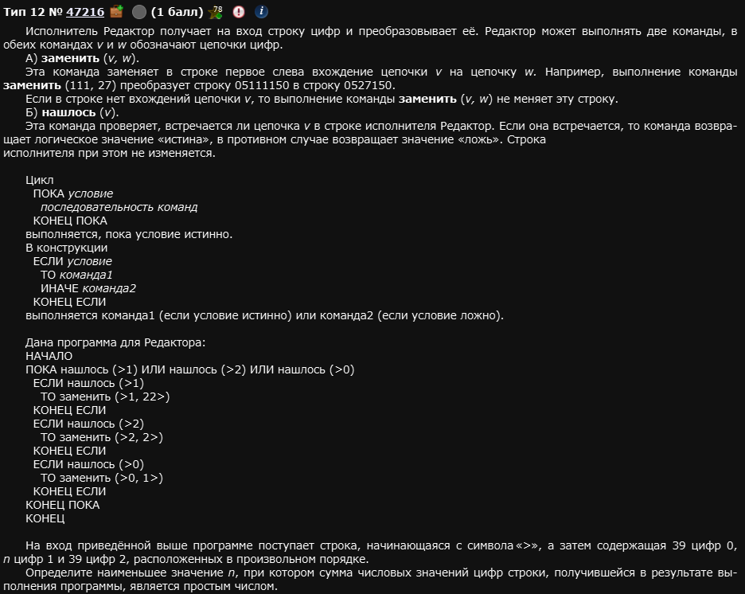
Ублюдское задание из-за двух моментов: int не работает потому, что есть ебаная ”>” где-то в строке, а условие в вопросе требует отдельного цикла для выполнения.
Будем делать поэтапно. Сначала пишем алгоритм из условия, определяем строку, засовываем в цикл, стандартные действия:
for n in range(1000):
s='>'+39*'0'+n*'1'+39*'2'
while ('>1' in s) or ('>2' in s) or ('>0' in s):
if '>1' in s:
s=s.replace('>1', '22>')
if '>2' in s:
s=s.replace('>2', '2>')
if '>0' in s:
s=s.replace('>0', '1>')А вот теперь надо P0D00MAT’,,,
Сумма цифр должна быть простым числом. Окей, давайте напишем такой алгоритм. Вообще, есть много способов проверки на простоту числа, самый банальный - тупо перебрать все числа вплоть до проверяемого. Если проверяемое число не делится ни на одно из чисел до него кроме единицы и его самого - значит проверяемое число простое (на самом деле можно проверять не до самого числа, а до половины этого числа (или даже до корня), но мы не паримся насчет оптимизации, нам важен правильный ответ и понятность того че мы делаем). Следовательно, нужен цикл:
k = 0 #чтобы для каждого числа кол-во делителей обновлялось
for i in range(1, sum_of_digits+1):
if sum_of_digits % i == 0:
k += 1
if k > 2:
break
#Здесь k - это счетчик делителей. Для простого числа он должен оставаться равным 2, т.к. цикл начинается с 1 и бегает вплоть до самого числа. Если он станет больше 2, значит число не простое, продолжать цикл нет смысла и мы его прерываем. Соответственно, после этого цикла надо написать проверку
# sum_of_digits - сумма цифр строки (пояснить подробнее?)
if k == 2:
print(n)
break
#break в конце написан для того, чтобы преравать цикл бОльший, который for из предыдущего блока кода т.к. нам нужно наименьшее n т.е. первый номер, который встретиться.Осталось добавить sum_of_digits т.е. сумму цифр. Тут можно поступить тупо:
sum_of_digits = s.count('2')*2 + s.count('1')А теперь объединяем все это неприличие в один код:
for n in range(1000):
s='>'+39*'0'+n*'1'+39*'2'
while ('>1' in s) or ('>2' in s) or ('>0' in s):
if '>1' in s:
s=s.replace('>1', '22>')
if '>2' in s:
s=s.replace('>2', '2>')
if '>0' in s:
s=s.replace('>0', '1>')
k = 0
sum_of_digits = s.count('2')*2 + s.count('1')
for i in range(1, sum_of_digits+1):
if sum_of_digits % i == 0:
k += 1
if k > 2:
break
if k == 2:
print(n)
breakВуаля, работает,,,
Ответ: 5.
Пример 6)
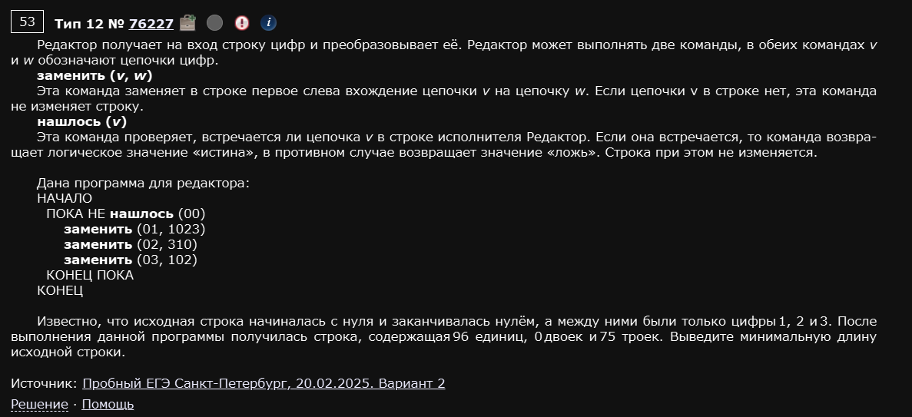
for n in range(1, 300): # n = длина "середины" (между нулями)
for a in range(n + 1): # a = сколько '1'
for b in range(n - a + 1): # b = сколько '2'
c = n - a - b # c = сколько '3'
s = "0" + "1"*a + "2"*b + "3"*c + "0"
while "00" not in s:
s = s.replace("01", "1023", 1)
s = s.replace("02", "310", 1)
s = s.replace("03", "102", 1)
if s.count("1") == 96 and s.count("2") == 0 and s.count("3") == 75:
print(n + 2) # +2 за два нуля по краям
raise SystemExit
Машина Тьюринга (Иной 12ый номер)
Наконец-то. Вторая фаза 12ого номера.
Пафоса-то,,,
На самом деле, новая 12ая задача (2026) кажется сильно страшнее, чем решается на самом деле. Фактически, она стала еще проще, чем оригинальная 12ая.
Самое сложное в этой задаче - прочитать огромное условие и вникнуть в него. Я даже так скажу: фактически, бОльшая часть условия абсолютно не нужна. На ФИПИ, как обычно, позеры играют. Давайте попробуем ΠΟΔOΟΜΑΤ’΄.
Поэтому я утружусь за вас, моих золотых, и переформулирую условие. Сразу после прочтения оригинального, из демки 2026.
Дисклеймер
Задание сформулировано довольно абстрактно. Это верный признак того, что его ТОЧНО будут усложнять на ЕГЭ будущих лет. Само условие и описание работы Машины Тьюринга вряд ли поменяется, меняться будут вопросы каждой конкретной задачи. В данный момент оно именно что страшное, но слишком простое в реализации.
Также, важно помнить о том, что это НОВЫЙ ПРОТОТИП 12ого номера. На момент написания этого текста у нас всего 2 подтвержденных примера этого прототипа - с демоверсии и с ЕГКР 2026 года. Остальное - это авторские придумки. За неимением лучшего, придется решать именно их.
У этого задания огромный простор для усложнения, поэтому в конце я постараюсь придумать универсальный алгоритм решения кодом. По крайней мере, достаточно универсальный, чтобы на момент 2026 решить любое задание, а в будущем просто модифицировать его.
Прототип МТ 12ого номера наиболее просто решается именно руками, а не универсальным кодом. Пока такового нет и простой идеи его реализовать как будто бы тоже нет. Тем не менее, я покажу оба варианта.
Исполнитель МТ представляет собой читающую и записывающую головку, которая может передвигаться вдоль бесконечной горизонтальной ленты, разделённой на равные ячейки. В каждой ячейке находится ровно один символ из алфавита исполнителя (множество символов A = {a0, a1, …, an − 1}), включая специальный пустой символ a0.
Время работы исполнителя делится на дискретные такты (шаги). На каждом такте головка МТ находится в одном из множества допустимых состояний Q = {q0, q1, …, qn − 1}. В начальный момент времени головка находится в начальном состоянии q0.
На каждом такте головка обозревает одну ячейку ленты, называемую текущей ячейкой. За один такт головка исполнителя может переместиться в ячейку справа или слева от текущей, не меняя находящийся в ней символ, или заменить символ в текущей ячейке без сдвига в соседнюю ячейку. После каждого такта головка переходит в новое состояние или остаётся в прежнем состоянии.
Программа работы исполнителя МТ задаётся в табличном виде.
| Абоба | … | |||
|---|---|---|---|---|
| команда | команда | … | команда | |
| команда | команда | … | команда | |
| … | … | … | … | … |
| команда | команда | … | команда |
В первой строке перечислены все возможные символы в текущей ячейке ленты, в первом столбце — возможные состояния головки. На пересечении i-й строки и j-го столбца находится команда, которую выполняет МТ, когда головка обозревает j-й символ, находясь в i-м состоянии. Если пара «символ — состояние» невозможна, то клетка для команды остаётся пустой.
Каждая команда состоит из трёх элементов, разделённых запятыми: первый элемент — записываемый в текущую ячейку символ алфавита (может совпадать с тем, который там уже записан). Второй элемент — один из четырёх символов «L», «R», «N», «S». Символы «L» и «R» означают сдвиг в левую или правую ячейки соответственно, «N» — отсутствие сдвига, «S» — завершение работы исполнителя МТ после выполнения текущей команды.
Сдвиг происходит после записи символа в текущую ячейку. Третий элемент — новое состояние головки после выполнения команды.
Например, команда 0, L, q3 выполняется следующим образом: в текущую ячейку записывается символ «0», затем головка сдвигается в соседнюю слева ячейку и переходит в состояние q3.
Приведём пример выполнения программы, заданной таблично. На ленте записано неизвестное ненулевое количество расположенных подряд в соседних ячейках символов «Z», все остальные ячейки ленты заполнены пустым символом «λ». В начальный момент времени головка находится на неизвестном ненулевом расстоянии справа от самого правого символа «Z».
Программа
| Абоба | λ | Ζ |
|---|---|---|
заменяет на ленте все символы «Z» на «X» и останавливает исполнителя в первой ячейке слева от последовательности символов «X».
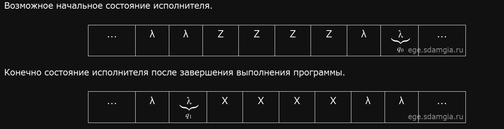
Выполните задание.
На ленте в соседних ячейках записана последовательность из 1000 символов, включающая только нули и единицы. Ячейки справа и слева от последовательности заполнены пустыми символами «λ». В начальный момент времени головка расположена в ближайшей ячейке справа от последовательности.
Программа работы исполнителя.
| Абоба | λ | 1 | 0 |
|---|---|---|---|
После выполнения программы на ленте осталось ровно 343 нуля. Определите максимально возможное число нулей в исходной последовательности.
Если вы себя хоть сколь-нибудь уважаете - не пытайтесь читать это условие. Тут без 100 грамм минимум не разъебешься в чем замес-то нахуй ваще.
Теперь переформулируем это условие на человечий.
Переформулирую,,,
Итак, есть лента, поделена на клеточки. В каждой клеточке записан один символ. В алфавите только 0 и 1. Слева и справа от этой ленты есть специальный символ “λ” означающий пустоту, границу последовательности. Вот такая лента:
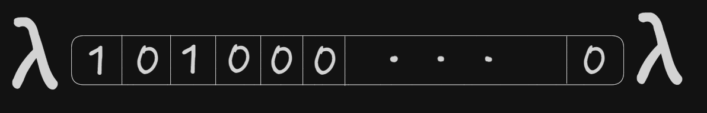
А еще у нас есть некая “головка исполнителя МТ”. Я предлагаю не принимать мысль о том, что мы работаем с головкой некоего МТ, поэтому назовем его Борисом, исполнительным нашим дройдекой. Так вот, Боря стоит изначально справа от всей ленты, над правой буквой λ.
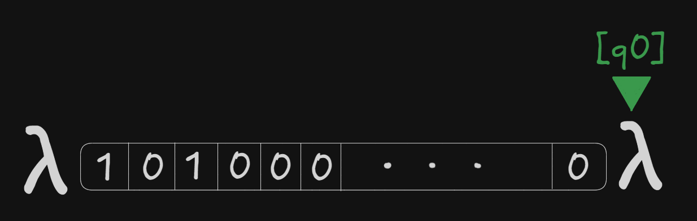
Боря умеет:
- Читать символы в клетке
- Записывать символ в клетку
- Двигаться влево и вправо
- Менять режимы работы
q0, q1, ...
Боря - это робот с памятью в 1 клетку.
Ну а теперь к тому как работает программа из условия
Программа - это таблица. Например такая:
| Абоба | λ | 1 | 0 |
|---|---|---|---|
- Строки - это текущее состояние Бори
q0, q1, ... - Столбцы - это символы, которые Боря сейчас зрит
λ, 0, 1
В клетке таблицы:
Что записать, куда двинуться, в какое состояние перейти
Например:
1, L, q1
Означает:
- Записать 1 в текущую клетку
- Сдвинуться влево
- Перейти в состояние
q1
Когда программа заканчивается?
Если во второй части стоит S:
Что-то, S, что-то
Это значит СТОП. Программа завершает работу.
Чуть подробнее остановимся именно на том как читается табличка
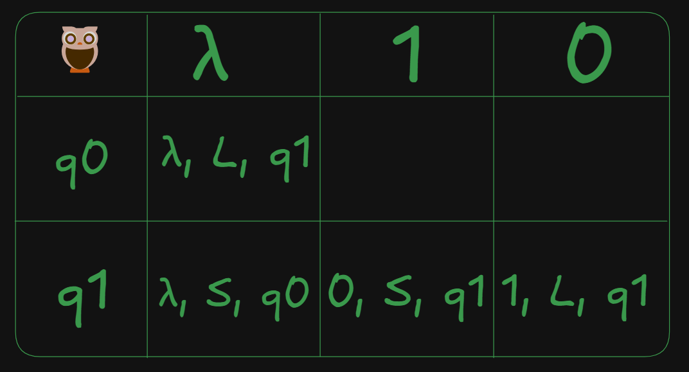
Мы начинаем с состояния q0 и символа λ. Т.е. вот отсюда:
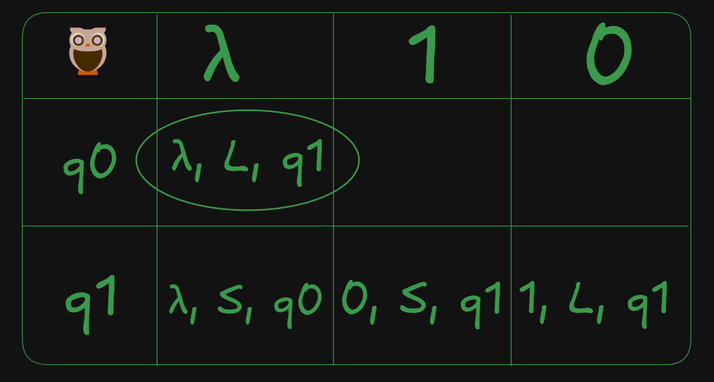
Тут написано:
Поставь символ λ, сдвинься на клетку ВЛЕВО, перейди в состояние q1
Т.е. на нашей ленте из вот такой ситуации:
Боря перешел вот в такую:
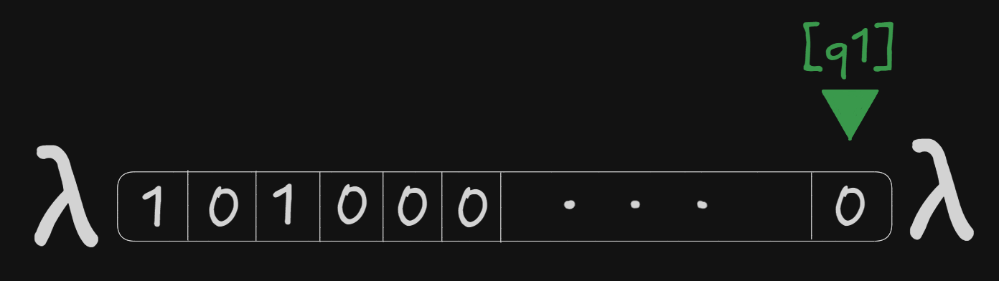
Боря теперь видит 0, находится в состоянии q1. Т.е. по табличке мы сделали вот такой переход:
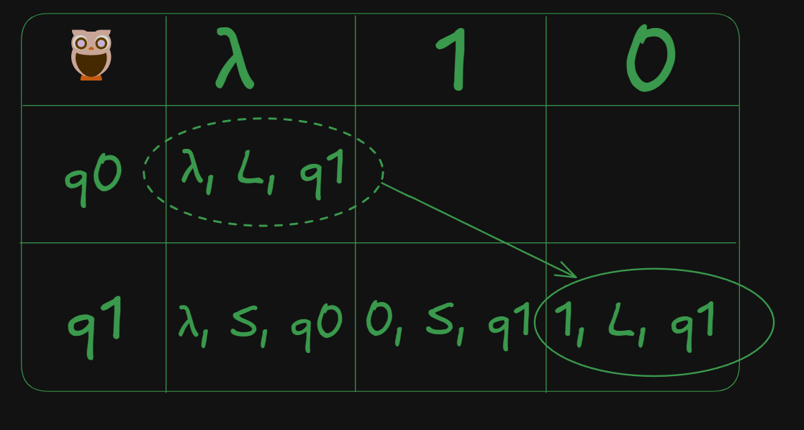
В команде написано:
Напиши 1, двинься ВЛЕВО, перейди в состояние q1
Мы уже в состоянии q1, поэтому режим работы он не меняет.
А теперь ключевое в нашем задании
Обратите внимание как выглядит последовательность. Да, это пример. Но это ОЧЕНЬ показательный пример.
Дык вот, в данном задании Боря просто делает АРИФМЕТИЧЕСКОЕ ВЫЧИТАНИЕ.
Ну т.е. он буквально меняет все 0 на 1 и как только встречает 1 или λ на своем пути - тут же останавливается. Ведь вот в этих ячейках таблицы:
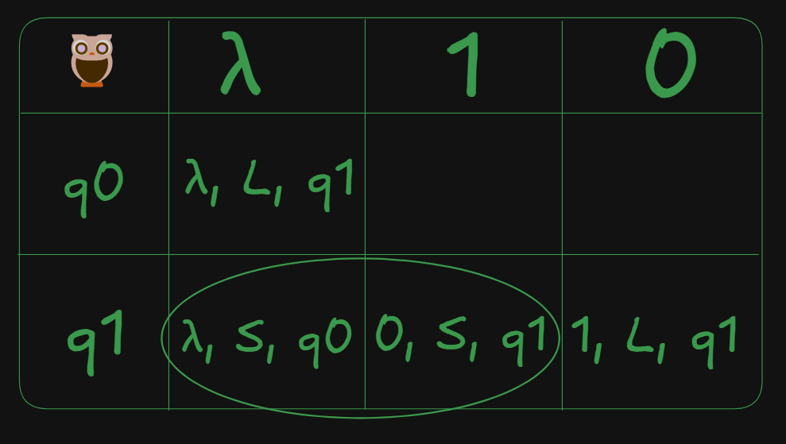
Буквально написано
Напиши λ, ОСТАНОВИСЬ, перейди в состояние q0
Напиши 0, ОСТАНОВИСЬ, перейди в состояние q1
На примере нашей последовательности:
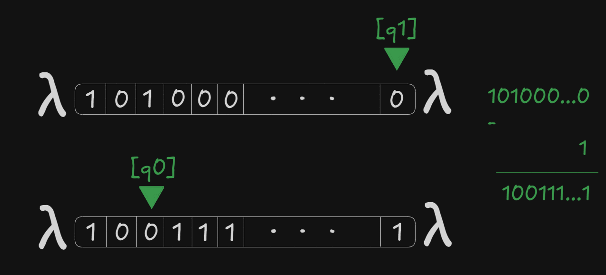
На более простом примере:
101000
↓
100111
Теперь Боря находится в состоянии q0 и НЕ ИМЕЕТ ДАЛЬНЕЙШИХ КОМАНД.
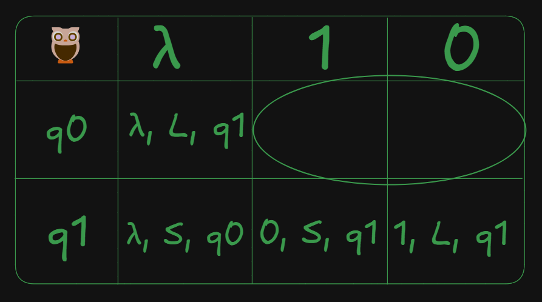
А значит все, ГГ, Боря отработал.
Это было описание вот того огромного объема текста основного условия и описания что и как работает. Теперь к вопросу.
После выполнения программы на ленте осталось ровно 343 нуля
Агасики. Т.е. мы знаем результат после вычитания 1, знаем общее кол-во нулей после работы, но не знаем сколько нулей было изначально.
Хотят от нас следующее:
Максимально возможное число нулей ИЗНАЧАЛЬНО, при условии, что ПОСЛЕ работы программы нулей стало ровно 343.
Резюмируем вышесказанное.
Что делает программа (по факту)
Она идёт справа налево:
-
пока видит 0 — заменяет 0→1 и идёт влево;
-
как только впервые видит 1 — заменяет 1→0 и останавливается;
-
если 1 так и не встретилась (строка вся из нулей) — дойдёт до λ и остановится (при этом все нули уже станут единицами).
То есть это вычитание 1 из двоичного числа (с правого конца).
Решаем.
Обозначения
Пусть в исходной строке было () нулей (длина строки 1000).
Пусть (k) — число нулей в самом конце (сколько подряд нулей стоит справа).
Если в строке есть хотя бы одна 1
Тогда операция такая:
- эти (k) последних нулей станут единицами ⇒ нулей станет на (k) меньше
- первая слева от них единица станет нулём ⇒ нулей станет на 1 больше
Значит:
По условию (=343), значит
Чтобы () было максимальным, надо сделать (k) максимальным, но при этом:
- в строке должна быть хотя бы одна
1(иначе финальных нулей было бы 0), - (),
- если (=1000) — это “все нули”, а единиц нет, противоречие.
Значит максимум — (=999) (999 нулей и 1 единица).
Ответ
Максимально возможное число нулей в исходной последовательности: 999.
Это задание наиболее просто решается именно руками, а не универсальным кодом. Пока такового нет и простой идеи его реализовать как будто бы тоже нет. Тем не менее, я попытаюсь придумать универсальный код. Скажу сразу - у меня не получилось, но я старался. Его бы немного доработать и будет нормик.
Налом или картой? Калом.
В целом, какой-то конкретный пример МТ прототипа 12ого номера решить несложно. Сложнее придумать универсальное решение (см далее). Например, это конкретное задание кодом решается вот так:
final = 343
maxStart = 0
for k in range(1001):
startZeros = final + k - 1# сколько нулей было в начале
if startZeros <= 999:# ≤999 потому что нужен хотя бы один '1'
maxStart = max(maxStart, startZeros)
print(maxStart)- Задаем начальные данные из условия:
final = 343
maxStart = 0- Прокручиваем всю строку от первого до последнего элемента
for k in range(1001):- Используем готовую формулу
startZeros = final + k - 1И перебираем в ней k
- Ищем возможный максимум:
if startZeros <= 999:# ≤999 потому что нужен хотя бы один '1'
maxStart = max(maxStart, startZeros)- Принтуем ответ:
print(maxStart)Но обратите внимание: фактически мы уже знаем как тут и чего. Т.е. как будто бы код просто излишний. Формулу-то мы взяли из рассуждений.
Еще пример
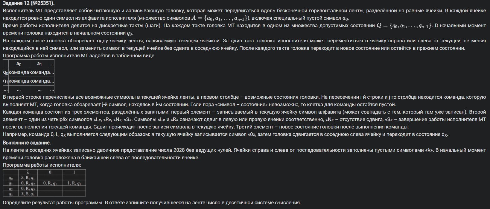
Ага, ага, похуй, похуй.
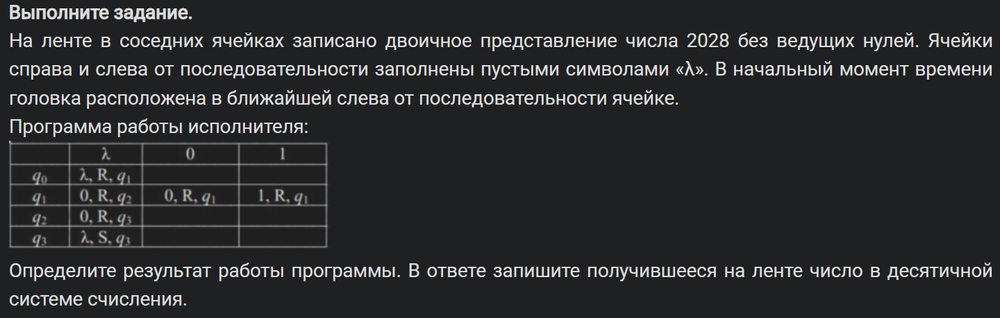
Вот то, что нам нужно.
| Сова? | λ | 0 | 1 |
|---|---|---|---|
| q0 | λ, R, q1 | ||
| q1 | 0, R, q2 | 0, R, q1 | 1, R, q1 |
| q2 | 0, R, q3 | ||
| q3 | λ, S, q3 |
Проанализируем. Программа стартует слева направо, ниче не меняет.
q1, 0: напиши 0, сдвинься ВПРАВО, перейди в q1
q1, 1: напиши 1, сдвинься ВПРАВО, перейди в q1
Пока не встретит λ. Как только встретила:
q1, λ: напиши 0, сдвинься ВПРАВО, перейди в q2
А в q2:
q2, λ: напиши 0, сдвинься ВПРАВО, перейди в q3
А в q3:
q3, λ: напиши λ, сдвинься ВПРАВО, перейди в q3
И все, дальше ничего меняться не будет.
Т.е., если имеем число 2028в двоичной, то результатом будет такое действие:
11111101100 → 1111110110000
Кто хорошо знает системы счисления - такое действие эквивалентно умножению числа в десятичной системе счисления на 4. Т.е. ответ 8112. Но если не знаете - можно программно:
c = 2028
bc = bin(2028)[2:]
res = bc + '00'
print(int(res, 2))Теперь давайте попытаемся придумать универсальный алгоритм решения, желательно программный. Команд и состояний может быть сколь угодно много и они могут быть заданы как угодно. Можно ли это все как-то задать, чтобы работало? Ну, давайте попробуем.
В этом году, скорее всего, задание будет почти такое же, как в демоверсии и в ЕГКР и от авторов. Это первый прогон, пока всем впадлу чета сверх этого выдумывать. Пилотный способ решения выглядит так:
# ===============================
# 1. СОЗДАЁМ ЛЕНТУ
# ===============================
SIZE = 5000 # размер ленты
tape = ["λ"] * SIZE # вся лента пустая
# ===============================
# 2. КЛАДЁМ ЧИСЛО НА ЛЕНТУ
# ===============================
binary_number = bin(2028)[2:] # 2028 в двоичной системе
start = 2500 # кладём число по центру
for i in range(len(binary_number)):
tape[start + i] = binary_number[i]
# головка стоит слева от числа
head = start - 1
state = "q0"
# ===============================
# 3. ТАБЛИЦА КОМАНД
# ===============================
rules = {
("q0", "λ"): ("λ", "R", "q1"),
("q1", "0"): ("0", "R", "q1"),
("q1", "1"): ("1", "R", "q1"),
("q1", "λ"): ("0", "R", "q2"),
("q2", "λ"): ("0", "R", "q3"),
("q3", "λ"): ("λ", "S", "q3"),
}
# ===============================
# 4. ЗАПУСК МАШИНЫ
# ===============================
while True:
symbol = tape[head]
if (state, symbol) not in rules:
break # если команды нет — стоп
write, move, new_state = rules[(state, symbol)]
# записываем символ
tape[head] = write
# двигаем головку
if move == "L":
head -= 1
elif move == "R":
head += 1
elif move == "S":
break # команда "стоп"
state = new_state
# ===============================
# 5. ЧИТАЕМ РЕЗУЛЬТАТ
# ===============================
result = "".join(tape).strip("λ")
print("Результат на ленте (двоичное):", result)
print("Результат в десятичной системе:", int(result, 2))
Универсально? Ну, в целом да, в рамках приличия, да.
Почему-то у меня вайбы черепашки,,,
Разберемся построчно че происходит, она совсем не страшная:
- Создаем ленту
SIZE = 5000 # размер ленты
tape = ["λ"] * SIZE # вся лента пустаяПочему она пустая изначально? Ну а какая бля,,,
- Кладем число на ленту
binary_number = bin(2028)[2:] # 2028 в двоичной системе
start = 2500 # кладём число по центру
for i in range(len(binary_number)):
tape[start + i] = binary_number[i]
# головка стоит слева от числа
head = start - 1
state = "q0"Первые 2 строки, думаю, пояснять не надо. Разве что в случае если у вас какая-то другая строка, то и задавать ее надо по-другому (см следующие разборы кодом).
Цикл:
for i in range(len(binary_number)):
tape[start + i] = binary_number[i]Просто “раскладывает” число на нашу ленту. Ну т.е., условно:
Допустим:
binary_number = "1011"
start = 10Цикл делает это:
i = 0→tape[10] = "1"i = 1→tape[11] = "0"i = 2→tape[12] = "1"i = 3→tape[13] = "1"
То есть число "1011" раскладывается по клеткам ленты подряд, начиная с позиции start.
Ну и последние две строки думаю тоже пояснять не нужно.
- Таблица команд
Мы подходим к ключевому, к фундаментальному. Мы задаем команды сами. Пока мы не встретили задание с огромным множеством рекурсивных команд (поверьте, такое обязательно будет) мы можем задавать их вручную.
rules = {
("q0", "λ"): ("λ", "R", "q1"),
("q1", "0"): ("0", "R", "q1"),
("q1", "1"): ("1", "R", "q1"),
("q1", "λ"): ("0", "R", "q2"),
("q2", "λ"): ("0", "R", "q3"),
("q3", "λ"): ("λ", "S", "q3"),
}Здесь мы встречаем новую сущность - словарь. Словарь - это массив данных типа “ключ-значение”. Работает он приблизительно так:
если знаю «ключ» → могу мгновенно получить «значение»
Пример из жизни:
- номер телефона → имя
- слово → перевод
- (состояние, символ) → команда
Как выглядит словарь
r = {}пустой словарь (пока в нём ничего нет)
Добавляем записи:
r["кот"] = "cat"
r["собака"] = "dog"Теперь:
print(r["кот"]) # cat
print(r["собака"]) # dogПочему словарь нужен в машине Тьюринга
В таблице МТ есть правило:
если я в таком состоянии и вижу такой символ — сделай вот это
Это идеально ложится на словарь:
rules = {
("q1", "0"): ("1", "L", "q2"),
("q1", "1"): ("0", "S", "q1"),
}Читается так:
- ключ:
(состояние, символ) - значение:
(что_писать, куда_идти, новое_состояние)
- Сама Машина Тьюринга
while True:
symbol = tape[head]
if (state, symbol) not in rules:
break # если команды нет — стоп
write, move, new_state = rules[(state, symbol)]
# записываем символ
tape[head] = write
# двигаем Борю
if move == "L":
head -= 1
elif move == "R":
head += 1
elif move == "S":
break # команда "стоп"
state = new_stateПострочно:
while True:Значит повторяй вечно, пока не будет break.
symbol = tape[head]Считываем символ под Борей.
if (state, symbol) not in rules:
break # если команды нет — стопЕсли текущей ситуации т.е. связки “символ + состояние” нет в правилах, то мы ломаем цикл.
write, move, new_state = rules[(state, symbol)]Иначе, если ситуация знакома, то смотрим в правила. Объявляем 3 новые переменные и задаем им соответствующие правила из нашего словаря.
tape[head] = writeЗаписываем символ из наших правил.
if move == "L":
head -= 1
elif move == "R":
head += 1
elif move == "S":
break # команда "стоп"Далее, движение Бори. Ну, тут все очевидно - если у нас move == "L", то Боре надо сместится налево т.е. head -= 1, аналогично если направо head += 1, и если надо встать, то break.
Не забываем поменять состояние Бори.
state = new_stateЕсли совсем коротко, то сам алгоритм Машины Тьюринга делится на 5 этапов:
Каждая итерация цикла = один такт машины Тьюринга:
- прочитал символ
- нашёл команду по
(состояние, символ) - записал
- сдвинулся или остановился
- поменял состояние
- Зрим в результат
result = "".join(tape).strip("λ")
print("Результат на ленте (двоичное):", result)
print("Результат в десятичной системе:", int(result, 2))Ну, тут собственно пояснять только первую строчку, остальное должно быть очевидно.
Мы к пустой строке справа прибавляем нашу итоговую ленту из символов и обрезаем λ.
ВСЕ.
Давайте теперь с этой программой попробуем решить сначала демоверсию 2026, а потом и другие номера от других авторов. Напомню:
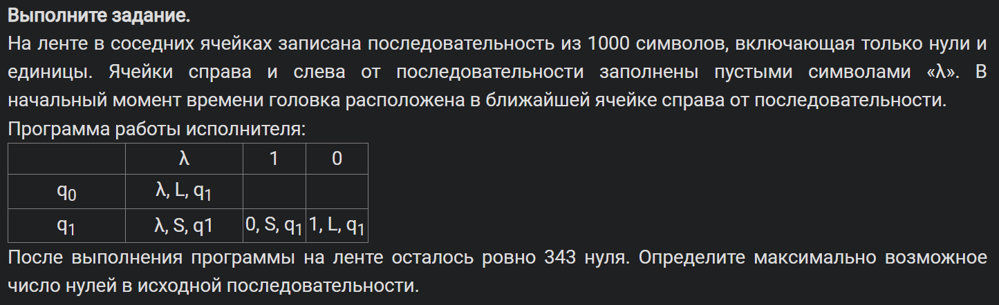
Программа будет тяжкая, есть такой момент. А руками мы уже решали, решается оно руками гораздо проще.
Я понимаю, что потерял почти всю аудиторию вот этого конкретного раздела еще на моменте когда вы посмотрели на универсальный алгоритм, поэтому без особых надежд оставлю этот код без комментариев.
# ===============================
# ПРАВИЛА МАШИНЫ (из демоверсии с 343 нулями)
# ===============================
rules = {
("q0", "λ"): ("λ", "L", "q1"),
("q1", "λ"): ("λ", "S", "q1"),
("q1", "1"): ("0", "S", "q1"),
("q1", "0"): ("1", "L", "q1"),
}
TARGET_ZEROS = 343
N = 1000
best_initial_zeros = -1
best_string = None
# ===============================
# ПЕРЕБОР k = сколько нулей в конце
# ===============================
for k in range(0, N): # k=0..999
# Чтобы машина остановилась на '1', нужна 1 перед хвостовыми нулями
# Значит структура: [левая часть] + "1" + "0"*k
# Длина должна быть N, значит левая часть длины: N - k - 1
left_len = N - k - 1
# Чтобы нулей было максимально, делаем левую часть из нулей
s = "0" * left_len + "1" + "0" * k
# --- симуляция на списке ---
SIZE = 5000
tape = ["λ"] * SIZE
start = 2500
for i, ch in enumerate(s):
tape[start + i] = ch
head = start + N # головка справа от последовательности
state = "q0"
while True:
symbol = tape[head]
if (state, symbol) not in rules:
break
write, move, new_state = rules[(state, symbol)]
tape[head] = write
if move == "L":
head -= 1
elif move == "R":
head += 1
elif move == "S":
break
state = new_state
final_segment = tape[start : start + N]
final_zeros = final_segment.count("0")
# Проверяем условие
if final_zeros == TARGET_ZEROS:
initial_zeros = s.count("0")
if initial_zeros > best_initial_zeros:
best_initial_zeros = initial_zeros
best_string = s
print("Максимум нулей в исходной строке:", best_initial_zeros)
print("Пример строки (первые 80 символов):", best_string[:80])
print("... последние 80 символов:", best_string[-80:])Пример 1)
23147
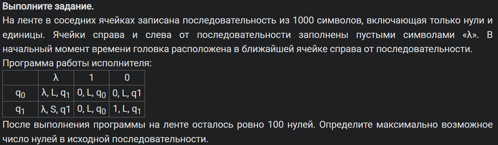
- Что делает наша программа?
Мы начинаем из состояния q0 и видим λ. Значит он движется справа налево и оставляет λ как есть, переходит в состояние q1. Т.е. мы осуществляем вот такой переход:
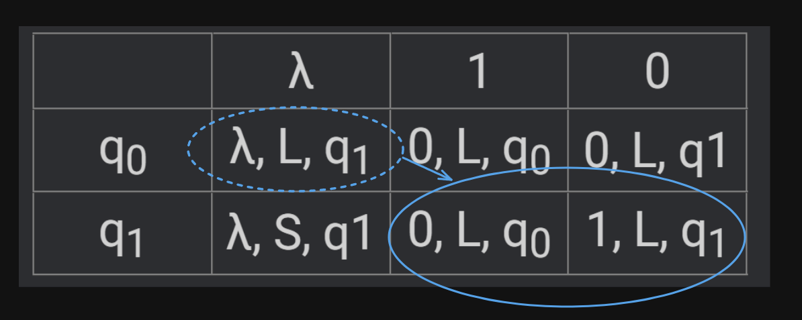
А далее, если Боря видит нолики, то меняет их на 1 и двигается далее. Если видит 1, то он меняет на нолики и переходит в состояние q0. Пока давайте зафиксируем:
Происходит инверсия.
0 -> 1и1 -> 0
Если боря встретил 1, то он переходит в q0, предварительно инвертировав единицу. Теперь мы вот здесь:
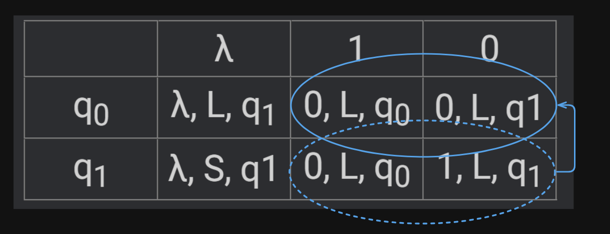
В этом состоянии он все меняет на нолики, но переходит в q1 тогда и только тогда, когда встретит 0.
Вывод:
Боря
занимается хуйнейвq1инвертирует числа, а вq0меняет все на 0. Переключение междуq1иq0происходит тогда, когда Боря вq1встретил 1 или вq0встретил 0.
- Окей, разобрались. Но как ответить на вопрос?
После выполнения программы на ленте осталось ровно 100 нулей. Определите максимально возможное кол-во нулей в исходной последовательности.
Давайте заметим одну приколюху. Если происходит чередование 0 и 1 в изначальной строке, то он все меняет на 0. Как-то так:
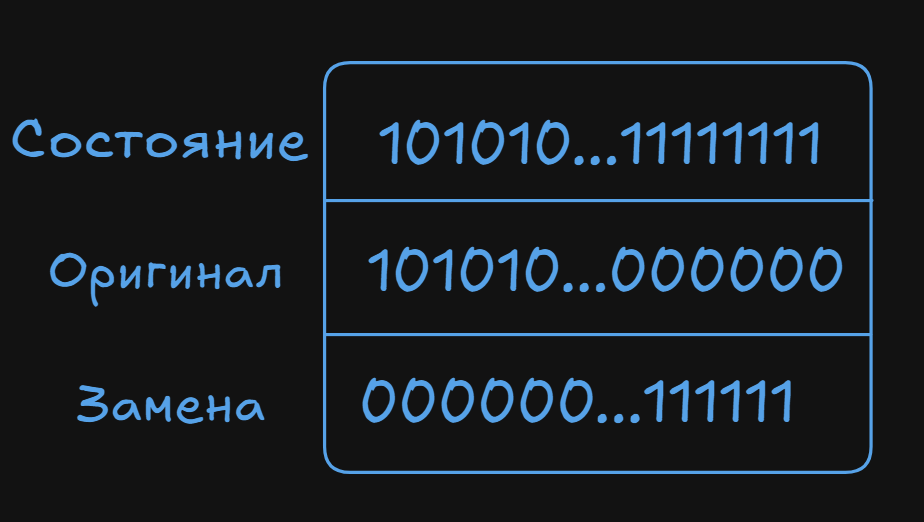
Соответственно, если в замене у нас 100 нулей, а оригинал чередуется, а оставшиеся - это 900 нулей, то всего у нас 950 нулей.
Ответ: 950.
Пример 2)
24305
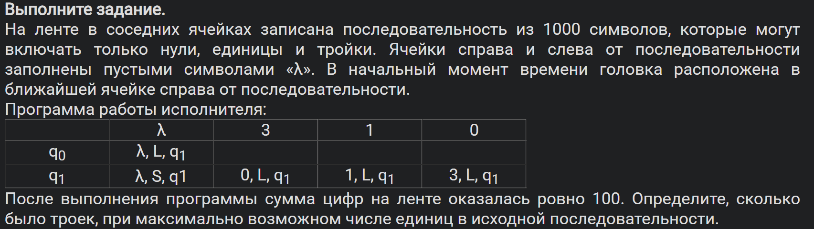
1) Что делает программа
Старт:
q0на правомλ:(q0,λ)→λ,L,q1— заходим на последний символ.
Дальше в q1 она идёт влево по всей строке, пока не встретит левый λ, где остановится: (q1,λ)→λ,S,q1.
При этом замены такие:
- если видит
3→ пишет0(то есть3→0) - если видит
1→ пишет1(то есть1→1) - если видит
0→ пишет3(то есть0→3)
Итого это просто отображение:
2) Переводим условие “сумма цифр после = 100” в уравнение
Пусть в исходной строке было:
- () нулей
- () единиц
- () троек
и (++=1000).
После замены:
- троек станет ровно () (потому что ())
- единиц станет ()
- нулей станет ()
Сумма цифр после:
3) Максимизируем число единиц в исходной строке
Из уравнения:
Чтобы () было максимальным, надо () сделать минимальным.
Минимум () — это 0.
Тогда:
- (=0)
- (=100)
- (=1000-0-100=900)
Ответ: 900
Пример 3)
24553
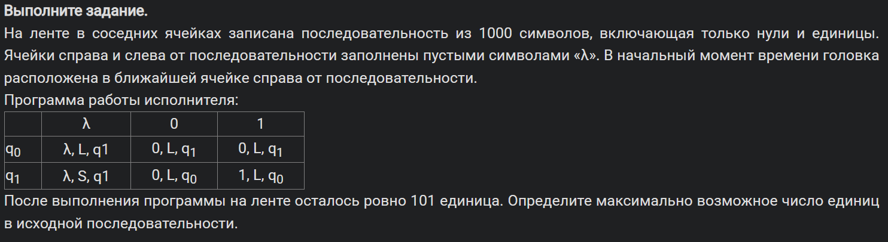
1) Что делает программа
-
q0:- на
λ→λ, L, q1 - на
0→0, L, q1 - на
1→0, L, q1(то есть вq0единица превращается в ноль)
- на
-
q1:- на
λ→λ, S, q1(остановка) - на
0→0, L, q0 - на
1→1, L, q0(то есть вq1символ не меняется)
- на
Старт: головка справа от последовательности, состояние q0.
Первый шаг: увидели λ → шагнули влево на последний символ и стали q1.
Дальше головка всегда идёт влево и состояния строго чередуются:
q1, q0, q1, q0, ...
2) Какие позиции “портятся”, а какие остаются
Нумеруем символы с правого края: самый правый имеет номер 0, левее — 1, 2, …
- позиция 0 обрабатывается в
q1→ не меняется - позиция 1 обрабатывается в
q0→ становится 0 всегда - позиция 2 в
q1→ не меняется - позиция 3 в
q0→ становится 0 всегда - и т.д.
👉 Значит:
- все позиции с нечётным номером (1,3,5,…) гарантированно станут 0
- позиции с чётным номером (0,2,4,…) останутся как были
3) Условие: после работы осталось 101 единица
Единицы могут остаться только на чётных позициях (считая справа).
Чётных позиций в строке длины 1000 ровно 500.
Чтобы после работы было 101 единица, нужно:
- на чётных позициях изначально поставить ровно 101 единицу
- остальные чётные позиции сделать нулями
4) Максимизируем число единиц в исходной строке
Нечётные позиции (их тоже 500) всё равно обнулятся, поэтому туда можно смело поставить все единицы, чтобы увеличить исходное количество.
Тогда максимум единиц в исходной:
- 500 (все нечётные позиции)
- 101 (на чётных, чтобы после осталось 101)
Итого: 500 + 101 = 601
Пример 4)
26348
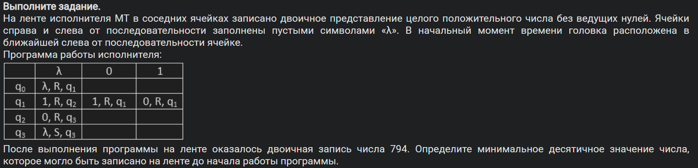
Хитрое задание. С одной стороны, довольно очевидно, что тут происходит инверсия и прибавка символов 10. Ну т.е., если было число X в двоичном виде, то станет NOT(X) + '10'. С другой стороны, я когда решал я сам запутался, поэтому говорю как есть:
Фраза “без ведущих нулей” относится только к исходному числу, а не к замененному. Т.е. замена вполне может начинаться с нуля. В то время как оригинал, очевидно, не может.
Соответственно, долго не думая лезем в питон и воспроизводим обратную картину:
s = bin(794)[2:]
t = s.translate(str.maketrans("01", "10")) # инверсия
# из-за грубой инверсии может с нуля начаться
# добавляем 1 вначало, если там 0
if t[0] != 1:
t = '1' + t
t = t[:-2] # МТ добавляет '10', мы убираем
print(t, int(t,2))
# 100111001 313Ну, или руками.
Оригинал: 1 0 0 1 1 1 0 0 1
Замена: 0 1 1 0 0 0 1 1 0 1 0
Не бойтесь проверки.
Ответ: 313.